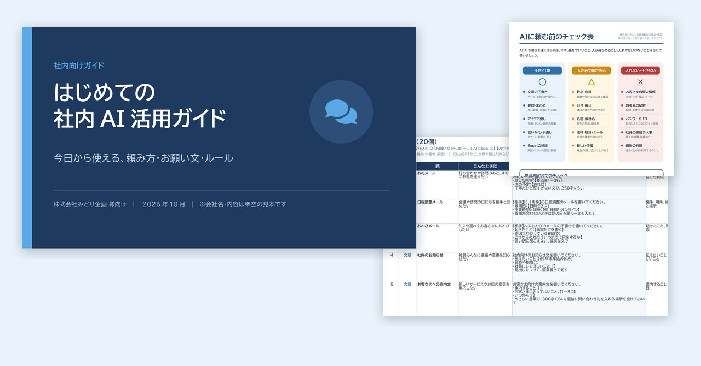
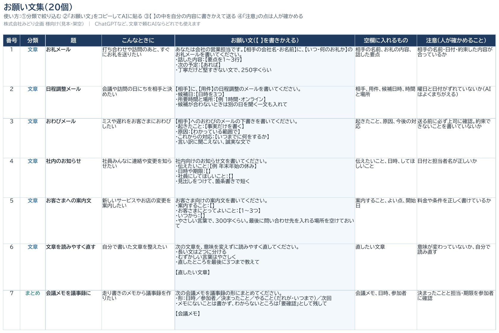
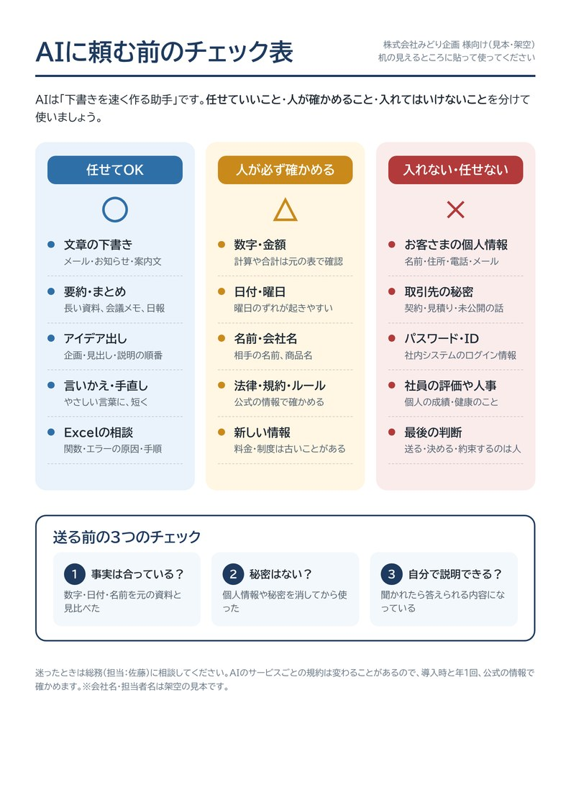

← 制作実績一覧へ戻る
見本 スライド10枚＋Excel＋A4
社内AI活用スターターキット（ガイド＋お願い文集＋チェック表）
「AIを社員に使わせたいけれど、何から始めればいいかわからない」会社向けに、配ったその日から使える3点セットを作りました。頼み方の型、仕事別のお願い文、社内ルールまでそろっています。

想定した依頼
「社員20人の会社です。ChatGPTを仕事に使わせたいけれど、使い方もルールも決まっていない。社員に配れば、その日から使い始められるセットを作ってほしい」。架空の会社の総務担当の方からのご相談を想定しました。
作ったもの
- 使い方ガイド（スライド10枚）：頼み方の型、やりとりで直すコツ、まちがいの見分け方、入れてはいけない情報、最初の2週間の始め方
- お願い文集（Excel・20個）：文章・まとめ・考える・Excelの4分類。コピーして【 】を書きかえるだけで使えて、「人が確かめること」も1つずつ書いてあります
- チェック表（A4・1枚）：「任せてOK／人が必ず確かめる／入れない・任せない」の3列と、送る前の3つのチェック。机に貼って使えます
使い方ガイドを1枚ずつ見る
お願い文集とチェック表


工夫した点
- 考え方より「道具」を渡す：研修で話を聞くだけでは、翌日から使えません。コピーして使えるお願い文と、貼っておけるチェック表をセットにしました。
- 安全のルールを具体的に：「気をつけましょう」ではなく、入れてはいけない情報を4つに絞り、どうしても使いたいときの置きかえ方まで例で示しました。
- 失敗しても困らない仕事から：1週目は下書きだけ、2週目からまとめやExcelへと、少しずつ広げる始め方にしました。うまくいったお願い文を持ち寄って、会社の財産にしていけます。
規模と制作時間
- スライド10枚（PowerPoint・PDF）、お願い文20個（Excel・4分類・絞り込みつき）、チェック表A4・1枚（PDF）
- 制作：設計（スライドの流れとお願い文20個の題）から、3点の作成と見た目の確認まで 約15分（AIと一緒に作成）
こんなご依頼にも対応できます
- 社員向けに、AIの使い方ガイドや研修資料を作りたい
- 自社の仕事に合わせた、お願い文（プロンプト）集を作りたい
- AIを使うときの社内ルールを、わかりやすい1枚にまとめたい
注意
会社名・人物・例の文章はすべて架空の見本です。AIのサービスごとの規約や料金は変わるので、導入するときは最新の公式情報で確かめてください。